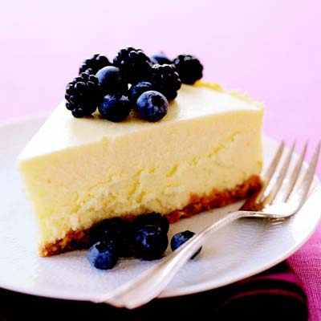
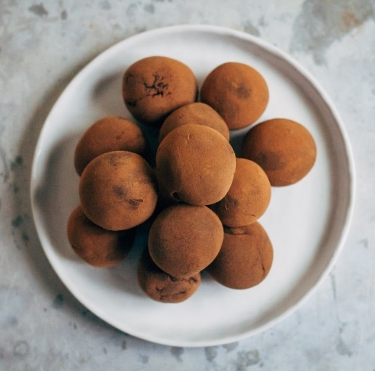

Ingredients:
- 3/4 cup graham cracker crumbs
- 2 tbsp vegetable oil spread
- 3 packages cream cheese
- 1 cup sugar
- 1 tbsp cornstarch
- 1 & 1/2½ pint sour cream
- 1 & 1/4 tsp vanilla extract
- 2 large eggs
- 2 large egg whites
Instructions:
- Preheat oven to 325 degrees F. In 9-inch springform pan, stir crumbs with spread until moistened. With hand, firmly press mixture onto bottom of pan. Bake crust 15 minutes or until deep golden. Cool 5 minutes on wire rack.
- Meanwhile, in large bowl, with mixer on medium speed, beat cream cheese until smooth. Combine sugar and cornstarch. Slowly beat sugar mixture into cream cheese. On low speed, beat in sour cream and vanilla. Add eggs and egg whites, 1 at a time, until blended.
- Pour batter over crust in pan. Bake cheesecake 1 hour. Edge will be set, but center will still jiggle. Turn oven off; let cheesecake remain in oven 1 hour. Transfer to wire rack. Run thin knife around edge of cheesecake to prevent cracking during cooling. Cool in pan, about 2 hours. Cover and refrigerate 4 hours or overnight. Remove side of pan to serve.
Prep Time: 25 mins, Cook Time: 1 hr, Servings: 16
Recipe from Good Housekeeping

Ingredients:
- Heaping ½ Cup Walnuts
- 8 Medjool Dates
- 2 Tbs Raw Agave Syrup
- 1/2 Cup Raw Cacao Powder
Instructions:
- Put walnuts and dates into a food processor and process until a mealy dough is formed.
- Then, add in cacao and agave and process until a smooth ball is formed in the food processor.
- Using a small ice cream scoop, scoop out little balls of the dough and use hands to form little balls. If desired, roll balls with a coating of raw cacao powder to finish.
Prep Time: 10 mins, Servings: 16
Recipe from Well and Full